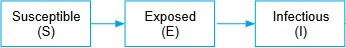

Tasmanian devils are small, cute, dog sized carnivores which have a habit of fighting and biting everything they see. They all live on a small island of the coast of the Australian mainland, the island state of Tasmania. Sadly the Tasmanian devils are slowly becoming extinct. A deadly facial tumour has been spreading across the population. The devil facial tumour disease (DFTD) is a contagious disease (transmissible cancer) which affects the Tasmanian devil.
The disease is called devil facial tumour disease because it can be observed as large ulcerating tumours primarily caused around the face and jaws of the devils. Due to these nasty tumours, the Tasmanian devils are not able to eat anymore and sadly they eventually die.
The DFTD disease was first observed in 1996, however in 2015 a second, quite similar disease was discovered which leads to the same facial tumours like the already known DFTD. Both types of diseases are transmissible by direct contact. Because Tasmanian devils are very likely to fight and bite each other during social interactions1, the risk of becoming infected with one of the 2 or both diseases increases masivelly.
Once a tumour becomes visible, the Tasmanian devils then only have 6 months left to live.2.
Over the last 20 years, the disease has reached epidemic proportion, killing so many Tasmanian devils to the extent that presently the Tasmanian devil might be facing extinction in the coming years3.
Research Questions:
There will be certain research questions addressed during this project, they are as follows:
What types of models, and ways of mathematically modelling exist to model DFTD1 and DFTD2 on a population of Tasmanian Devils?
Can a mathematical model, when combined with spatial data, be used to make a spatial, agent-based representation of the spread of DFTD1 and DFTD2?
Can a trade-off be found between complexity and comprehensibility in the spatial model, such that the impact of the tweaking of specific variables can still be found?
How complex does an agent-based spatial model have to be, in order to be an accurate representation of a population of Tasmanian Devils?
Models
To create a realistic simulation of the real-life scenario, our approach is to take inspiration from multiple models. For this reason we will examine mathematical models as well as agent-based models.
Mathematical
The mathematical models are used to gain an understanding into the dynamics of a population as well as the behaviour of the tasmanian devils. Understanding these models will be of use when making an agent-based version.
SEI-Models
SEI-Models (Susceptible-Exposed-Infected) use ordinary differential equations (ODEs) to model transitions between different states depending on other states. So in the case of the SEI-model, the states are susceptible, exposed and infected. For example The transition of individuals from the susceptible to to the exposed state depend on the number of individuals in the susceptible state as well as the number of individuals in the infected and exposed states. We will use the idea of transition probabilities depending on different states to implement the agent based model.

Fig 2. - SEI Model
Leslie Matrices
To model the changes in the population we use the concept of Leslie Matrices. In our case it contains the birth- and death-rates. This matrix will then be a representation of how many individuals in a population are in a certain “age-group” and how many of the individuals make it through the different generations.
This is a matrix that models what happens when different members of a population interact with each-other. It describes the outcome of an interaction depending on what group each individual belongs to. So if a healthy female and an infected male meet for example, certain outcomes can be expected with certain probabilities, e.g. the female might get infected or the two individuals could mate etc.
Fig 4. - Simple Example of an Interaction Matrix
Agent-based
In an agent based implementation each individual in a population will move around and make decisions based on the information it has of the environment, these individuals are called agents. As more variables are added to the simulation, to both the agents and the environment, the simulation should become a better approximation of a how the Devils act in real life. We can then introduce a disease to the population, which has the same effects as the facial tumor disease that affects the Devils in real life. By doing this we can learn how the disease spreads through a population.
Fig 5. - Simulation Screenshot
Summary
The main goal of the project is to gain insight into how the cancer spreads through a population of devils. By simulating a population of devils in which these cancers are present, it may be possible to predict the spreading of the cancers in real-life populations. This could help in finding ways to slow the disease's spread and possibly prevent further damage to populations of devils in the wild.
1:Pearse, A.-M. and Swift, K. (2006, Feb 1). Transmission of devil facial-tumour disease. Nature, 439 , 549 EP -. Retrieved from http://dx.doi.org/10.1038/439549a
2:Hawkins, C., Baars, C., Hesterman, H., Hocking, G., Jones, M., Lazenby, B., . . . Wiersma, J. (2006). Emerging disease and population decline of an island endemic, the tasmanian devil sarcophilus harrisii. Biological Conservation, 131 (2), 307 - 324. Retrieved from http://www.sciencedirect.com/science/article/pii/S0006320706001595 (Infectious Disease and Mammalian Conservation) doi: https://doi.org/10.1016/j.biocon.2006.04.010
3:McCallum, H., Jones, M., Hawkins, C., Hamede, R., Lachish, S., Sinn, D. L., . . . Lazenby, B. (2009). Transmission dynamics of tasmanian devil facial tumor disease may lead to disease-induced extinction. Ecology, 90 (12), 3379–3392. Retrieved from http://dx.doi.org/10.1890/08-1763.1 doi: 10.1890/08-1763.1